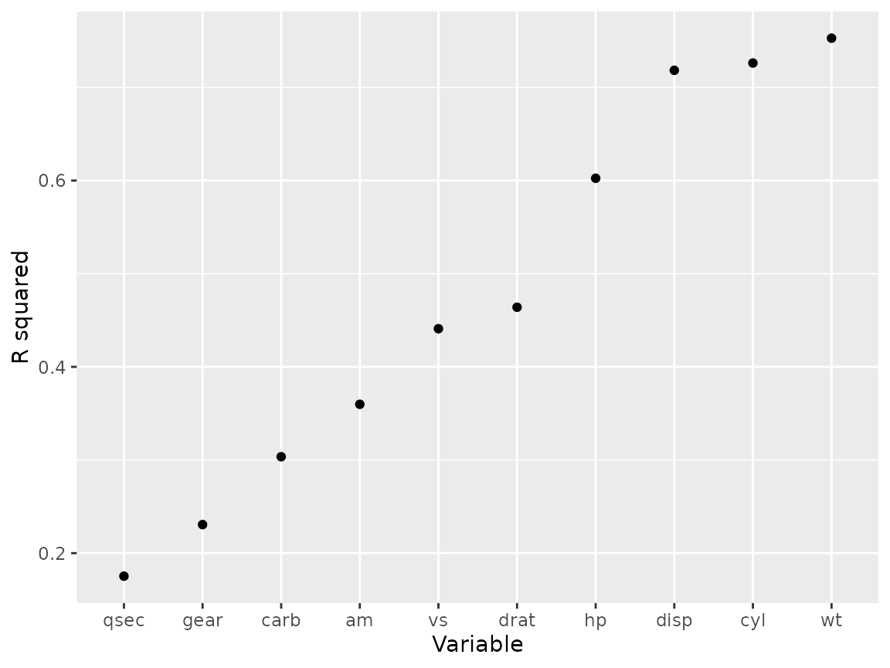

Why use functions
Sarah Endicott and David Hope
functions.RmdDisclaimer
Much of the examples and code here comes from Hadley Wickham et al’s books R for data science and R packages.
As such, you’ll need to use the “tidyverse” metapackage to follow
along with today’s code. Use install.packages("tidyverse")
to install the complete set of packages.
You might also want the “testthat” package, though that isn’t necessary for most what we’ll show today.
Why use functions
Avoid copy paste errors
Only update code in one place
Reuse code across different projects
Simplify code so repetition is hidden and differences are clear
You can give a function an evocative name that makes your code easier to understand.
When to write a function
This is the advice of Hadley Wickham:
This often means re-writing the first two spots where you used the code but it is worth it.
Example 1
Here is an example of repetition we can avoid by using a function.
df <- tibble(a = rnorm(5), b = rnorm(5), c = rnorm(5), d = rnorm(5))
df |> mutate(
a = (a - min(a)) / (max(a) - min(a)),
b = (b - min(a)) / (max(b) - min(b)),
c = (c - min(c)) / (max(c) - min(c)),
d = (d - min(d)) / (max(d) - min(d))
)
#> # A tibble: 5 × 4
#> a b c d
#> <dbl> <dbl> <dbl> <dbl>
#> 1 0.339 0.387 0.291 0
#> 2 0.880 -0.613 0.611 0.557
#> 3 0 -0.0833 1 0.752
#> 4 0.795 -0.0822 0 1
#> 5 1 -0.0952 0.580 0.394Can you spot the copy-paste error above? How would you discover this error in the resulting output?
Now that we fixed that, how can we turn this into a function?
df |> mutate(
a = (a - min(a)) / (max(a) - min(a)),
b = (b - min(b)) / (max(b) - min(b)),
c = (c - min(c)) / (max(c) - min(c)),
d = (d - min(d)) / (max(d) - min(d))
)
#> # A tibble: 5 × 4
#> a b c d
#> <dbl> <dbl> <dbl> <dbl>
#> 1 0.339 1 0.291 0
#> 2 0.880 0 0.611 0.557
#> 3 0 0.530 1 0.752
#> 4 0.795 0.531 0 1
#> 5 1 0.518 0.580 0.394- Identify parts that are the same across repetitions and “factor out” the parts that are different. This is the function body
For example, if we replace all the letters with x the
rest is the same.
- Choose a clear name that tells us what the function
does. Ideally a verb. Lets use
rescale01since the code rescales the vector to 0-1. - Name the parts that will change between uses, these are the
arguments.
xis a conventional name for a numeric vector.
Function template:
name <- function(arguments) {
body
}Filling in the template we get:
Then when we use the function in our code we can clearly see that we are applying the same rescaling across each column.
df |> mutate(
a = rescale01(a),
b = rescale01(b),
c = rescale01(c),
d = rescale01(d)
)
#> # A tibble: 5 × 4
#> a b c d
#> <dbl> <dbl> <dbl> <dbl>
#> 1 0.339 1 0.291 0
#> 2 0.880 0 0.611 0.557
#> 3 0 0.530 1 0.752
#> 4 0.795 0.531 0 1
#> 5 1 0.518 0.580 0.394Note: you can decrease repetition even more using iteration eg
df |> mutate(across(a:d, rescale01)). See R for Data Science Chapter
26 for more on this.
What if we try our function on data containing an
NA?
All we need to do is change the definition of the function in one place so that we can handle NAs appropriately:
rescale01 <- function(x, na.rm=TRUE) {
(x - min(x, na.rm = na.rm)) / (max(x, na.rm = na.rm) - min(x, na.rm = na.rm))
}Now our new function will allow for your collaborator to include missing data and not ruin your analysis.
df |>
# This line adds a row with just the column d included
bind_rows(tibble(d = 1)) |>
mutate(
a = rescale01(a),
b = rescale01(b),
c = rescale01(c),
d = rescale01(d)
)
#> # A tibble: 6 × 4
#> a b c d
#> <dbl> <dbl> <dbl> <dbl>
#> 1 0.339 1 0.291 0
#> 2 0.880 0 0.611 0.468
#> 3 0 0.530 1 0.632
#> 4 0.795 0.531 0 0.840
#> 5 1 0.518 0.580 0.331
#> 6 NA NA NA 1Below we talk more about anticipating these types of failures before they happen and using testing to ensure your functions are robust.
What is a function?
A function is an object in R just like a vector or a data frame. A
function can be defined in a package (eg: dplyr::mutate) or
created in an R session. As mentioned above a function has three parts
that need to be defined, the name,
arguments and body.
name <- function(arguments) {
body
}The name is what you use to call the function
(rescale01), the arguments are what you
provide to the function (x in rescale01) and
the body is where the function does the work.
Environments
There is one additional part of a function that is implicitly created when the function is created which is an environment. An environment is the place where code looks for objects that are called. It is associated with the body of the function.
For example, above we defined two objects df and
rescale01 which are both stored in the “Global environment”
and are listed in the Environment pane in RStudio. The Global
environment is the first place code run in the Console will look for an
object.
But inside the body of our function rescale01 we also
defined an object x.
Does x exist?
x
#> Error: object 'x' not foundNo! It doesn’t exist in the Global environment, it only exists inside the function’s environment. Objects created inside a function are not available in the Global environment. Only the result of the last expression evaluated in the function will be returned.
For example:
rescale01 <- function(x) {
(x - min(x)) / (max(x) - min(x))
message("data rescaled")
}
output <- rescale01(df)
#> data rescaled
print(output)
#> NULLThis returned NULL since that is the value returned by
message().
To return the rescaled data we assign it to an object and then evaluate the object last.
rescale01 <- function(x) {
x <- (x - min(x)) / (max(x) - min(x))
message("data rescaled")
x
}
rescale01(df)
#> data rescaled
#> a b c d
#> 1 0.2303762 0.7964117 0.4183571 0.1275467
#> 2 0.5980471 0.1366962 0.6810416 0.4253950
#> 3 0.0000000 0.4864056 1.0000000 0.5296555
#> 4 0.5401014 0.4870998 0.1790810 0.6619434
#> 5 0.6793915 0.4785473 0.6551536 0.3383143Converting existing scripts to use functions
Example 2
Imagine we have a script to process csv files containing observations of temperature and location from swimmers.
This is the R script:
infile <- "swim.csv"
swims_in <- read.csv(infile)
swims <- swims_in
swims
#> name where temp
#> 1 Adam beach 95
#> 2 Bess coast 91
#> 3 Cora seashore 28
#> 4 Dale beach 85
#> 5 Evan seaside 31
# Assume country based on name for beach
swims$english[swims$where == "beach"] <- "US"
swims$english[swims$where == "coast"] <- "US"
swims$english[swims$where == "seashore"] <- "UK"
swims$english[swims$where == "seaside"] <- "UK"
# Assume Farenheit for US
swims$temp[swims$english == "US"] <- (swims$temp[swims$english == "US"] - 32) * 5/9
swims
#> name where temp english
#> 1 Adam beach 35.00000 US
#> 2 Bess coast 32.77778 US
#> 3 Cora seashore 28.00000 UK
#> 4 Dale beach 29.44444 US
#> 5 Evan seaside 31.00000 UK
# save result with a timestamp
now <- Sys.time()
timestamp <- format(now, "%Y-%B-%d_%H-%M-%S")
(outfile <- paste0(timestamp, "_", sub("(.*)([.]csv$)", "\\1_clean\\2", infile)))
#> [1] "2025-April-23_16-01-26_swim_clean.csv"
write.csv(swims, file = outfile, quote = FALSE, row.names = FALSE)This is an example of how functions can help to simplify code even when there isn’t a lot of repetition.
First we make a function to assign a country based on the name used
for the swimming location. This uses a look up table rather than
assigning each directly to reduce the repeated
swims$english[swims$where == calls.
library(tidyverse)
localize_beach <- function(dat) {
lookup_table <- tribble(
~where, ~english,
"beach", "US",
"coast", "US",
"seashore", "UK",
"seaside", "UK"
)
left_join(dat, lookup_table, by = "where")
}
swims_in %>% localize_beach()
#> name where temp english
#> 1 Adam beach 95 US
#> 2 Bess coast 91 US
#> 3 Cora seashore 28 UK
#> 4 Dale beach 85 US
#> 5 Evan seaside 31 UKThen we write two functions, one to convert F to C and another that
applies f_to_c() to US temperatures in a data frame.
f_to_c <- function(x) (x - 32) * 5/9
celsify_temp <- function(dat) {
mutate(dat, temp = if_else(english == "US", f_to_c(temp), temp))
}
swims_in %>% localize_beach() %>% celsify_temp()
#> name where temp english
#> 1 Adam beach 35.00000 US
#> 2 Bess coast 32.77778 US
#> 3 Cora seashore 28.00000 UK
#> 4 Dale beach 29.44444 US
#> 5 Evan seaside 31.00000 UKFinally, one more function to create the output file name
outfile_path <- function(infile) {
now <- Sys.time()
timestamp <- format(now, "%Y-%B-%d_%H-%M-%S")
paste0(timestamp, "_", str_replace(infile, "(.*)([.]csv$)", "\\1_clean\\2"))
}
outfile_path(infile)
#> [1] "2025-April-23_16-01-26_swim_clean.csv"To keep our script tidy we can move the functions we have defined
into a separate script. Eg cleaning-funs.R
# define functions
localize_beach <- function(dat) {
lookup_table <- tribble(
~where, ~english,
"beach", "US",
"coast", "US",
"seashore", "UK",
"seaside", "UK"
)
left_join(dat, lookup_table, by = "where")
}
f_to_c <- function(x) (x - 32) * 5/9
celsify_temp <- function(dat) {
mutate(dat, temp = if_else(english == "US", f_to_c(temp), temp))
}
outfile_path <- function(infile) {
now <- Sys.time()
timestamp <- format(now, "%Y-%B-%d_%H-%M-%S")
paste0(timestamp, "_", str_replace(infile, "(.*)([.]csv$)", "\\1_clean\\2"))
}Putting that all together we get a simpler script where the function names tell us what the code is doing.
library(tidyverse)
source("cleaning-funs.R")
infile <- "swim.csv"
swims <- read.csv(infile)
swims <- swims %>%
localize_beach() %>%
celsify_temp()
swims
#> name where temp english
#> 1 Adam beach 35.00000 US
#> 2 Bess coast 32.77778 US
#> 3 Cora seashore 28.00000 UK
#> 4 Dale beach 29.44444 US
#> 5 Evan seaside 31.00000 UK
write.csv(swims, outfile_path(infile))The tricky question is how much simplification is useful? Here the script is simpler and makes it pretty clear what the steps of the cleaning process are but it hides the assumption that we can classify country based on beach name and temperature units based on that country. Whether that is desirable depends on the use case of the code.
One useful tool for navigating code containing functions in RStudio is F2. If you place your cursor inside a function name and press F2 you will jump to the definition of the function. This allows readers that care about the details to easily navigate to them.
Benefits of a functional mindset
Once you start using functions in your code you will start to notice more opportunities to reduce repetition and write more efficient code.
Example 3
Let say we want to determine which variable in the
mtcars data set is the best predictor of mpg.
To do this we build a linear model for each variable vs mpg
(Note this a toy example not stats advice).
A first attempt might be to right them all out by hand.
library(broom)
mod_cyl <- lm(mpg ~ cyl, data = mtcars)
gl_cyl <- glance(mod_cyl)
mod_disp <- lm(mpg ~ disp, data = mtcars)
gl_disp <- glance(mod_disp)
data.frame(var = c("cyl", "disp"), r.squared = c(gl_cyl$r.squared, gl_disp$r.squared))
#> var r.squared
#> 1 cyl 0.7261800
#> 2 disp 0.7183433
# But for all the variables... sighOne option is to use a for loop
mtcars_vars <- colnames(mtcars) %>% str_subset("mpg", negate = TRUE)
mtcars_mods <- vector("list", length = length(mtcars_vars))
for (i in seq_along(mtcars_vars)) {
form <- as.formula(paste0("mpg ~ ", mtcars_vars[i]))
mod <- lm(form, data = mtcars)
mtcars_mods[[i]] <- mod
}Another option is to write a function and iteratively apply it to all the variables
fit_mpg_vs_x <- function(x){
form <- as.formula(paste0("mpg ~ ", x))
lm(form, data = mtcars)
}
# name the mtcars_vars list so output is named
names(mtcars_vars) <- mtcars_vars
mtcars_mods <- map(mtcars_vars, fit_mpg_vs_x)I like this better than the for loop because there is less boilerplate code. But it becomes really useful if we need to apply the same model to a different set of variables. In a for loop we would need to repeat the whole thing but since a function is saved as an object we can easily apply it to a different vector.
Then we can easily apply additional functions to the results to get our desired output.
library(broom)
mtcars_mods %>% map(glance) %>% list_rbind(names_to = "var") %>%
ggplot(aes(fct_reorder(var, r.squared), r.squared))+
geom_point()+
labs(y = "R squared", x = "Variable")
Best practices for writing functions
Before we go on, lets take a moment to introduce two coding practices that are critical for packages, but will greatly assist you if you get in the practice now.
Documentation
In a package, function documentation is what you see when you run
?str. It names the function, describes its use, outlines
the argument definitions and critically has code examples.
Outside of a package, this is no different than using “#” to add code comments. However the “roxygen2” package creates some formality to this that will aid you now and in a package automatically generate a help file.
In Rstudio, if your cursor is inside a function, you can enter “ctrl-alt-shift-r” or find “Insert Roxygen skeleton” under “Code” in your menu bar. This will insert the following pieces above your function.
#' Title
#'
#' @param x
#'
#' @returns
#' @export
#'
#' @examples
rescale01 <- function(x) {
(x - min(x)) / (max(x) - min(x))
}We can then go in and add some details about the function:
#' Rescales a value between 0 and 1
#'
#' Allows you to take a vector of values or column
#'
#' @param x vector of values to rescale
#'
#' @returns vector of values rescaled
#'
#' @examples
#' rescale01(mtcars$mpg)
#'
#' transmute(mtcars,
#' mpg,
#' mpg_scaled = rescale01(mpg))
#'
rescale01 <- function(x) {
(x - min(x)) / (max(x) - min(x))
}R will ignore all the comments in general use, but Rstudio does highlight the arguments which makes them easy to read within your code. The “@examples” tag allows you to show how the code is supposed to be run. This is often the only part I look at in a help page, so worth putting time into if your function is more complicated.
Testing
How do we know a function is working as planned? In some cases you’ll
get an error, but not always. Lets go back to the original version
without the na.rm variable (just
above).
With this version of the function if I run the following, I can be pretty sure I won’t miss these outputs, but do you expect them?
a <- c(1, 1, 1, 1, 1)
rescale01(a)
#> [1] NaN NaN NaN NaN NaNTo formalize your understanding of what a function should do, we write tests. The package “testthat” can greatly help with this.
testthat::test_that("All equal returns NaN",
{
testthat::expect_equal(
{
a <- c(1, 1, 1, 1, 1)
unique(rescale01(a))
},
NaN # Here is what we expect the above to return
)
})In this case, we knew that if all the values are equal the denominator in our function would be zero. R dividing by zero returns NaN.
However perhaps we forgot that min and max
have “na.rm=FALSE” by default, so we expect that only the NA in the
second example would be returned as NA:
testthat::test_that("One NA doesn't spoil the batch",
{
testthat::expect_equal(
{
a_r <- c(NA,runif(10, -1, 1))
a_r2 <- rescale01(a_r)
sum(is.na(a_r2)) # Count the number of NA in the output
},
1 # We expect just one NA in the output
)
}
)In this case we are expecting only one NA, but as min
max will return NA, all the values in the vector are
returned as NA.
As we saw in the updated function (shown below), we can update the
function to include na.rm as variable with a default of
TRUE.
This modification allowsd us to quickly and easily change the code by allowing you to chose the na.rm behaviour and setting the default to TRUE as this is what will usually make sense.
#' Rescales a value between 0 and 1
#'
#' Allows you to take a vector of values or column
#'
#' @param x vector of values to rescale
#' @param na.rm logical should NA values be removed from min/max. Defaults to TRUE
#'
#' @returns vector of values rescaled
#'
#' @examples
#' rescale01(mtcars$mpg)
#'
#' transmute(mtcars,
#' mpg,
#' mpg_scaled = rescale01(mpg))
#'
rescale01 <- function(x, na.rm=TRUE) {
(x - min(x, na.rm = na.rm)) / (max(x, na.rm = na.rm) - min(x, na.rm = na.rm))
}Now we change our expectations for the initial test and add a new
test to show what we learned about behaviour when
na.rm=FALSE.
testthat::test_that("One NA doesn't spoil the batch, unless I want it to",
{
a_r <- c(NA,runif(10, -1, 1))
# Test default behaviour
testthat::expect_equal(
{
a_r2 <- rescale01(a_r)
sum(is.na(a_r2)) # Count the number of NA in the output
},
1
)
# Now we expect all NA if we set na.rm=FALSE
testthat::expect_equal(
{
a_r2 <- rescale01(a_r, na.rm = FALSE)
sum(is.na(a_r2)) # Count NAs
},
11
)
}
)There is a formal structure in packages for running and storing
tests, but for generic code, you may want a separate file in your
package named ‘tests-rescale01.R’ or
tests-functions.R' to document your tests. Also note, the code within your "testthat" functions won't be exported to your main environment. See thetesting-cleaning-funs.R`
in this repo for
an example.
When to make it a Package?
An R package is a collection of functions and metadata that can be easily shared with other R users. It includes a standardized folder structure and set of files.
The copy twice rule of thumb applies to whole functions as well. Once
you have copied a function across two separate script it should at least
go in a separate file that is sourced in both scripts so you only need
to change it in one place. Then if you are copying the same helper
functions into multiple projects they should become a package that you
can call in that script with library(mypackage).
Another school of thought is that all analysis projects should use a package structure to organize their code (One example) or a modified package structure with additional folders added for analysis and paper writing (What Sarah uses).
How to create a package
The book R Packages contains
everything you need to know to write a package.
The key files that define a package are:
- DESCRIPTION: Metadata about the package including dependencies
- NAMESPACE: List of imported and exported functions
- R: Code that defines the functions of the package
Two packages, devtools and usethis, and tools in RStudio make
building your own package pretty easy. For example, all the boilerplate
structure of a package can be created with
usethis::create_package(). You then add new function
scripts with usethis::use_r(), and create tests with
usethis::use_test.
Benefits of using a package
Easy loading and re-loading: call
devtools::load_all()(Ctrl-Shift-L) to source all the functions in your R directoryWay to record and install dependencies: record dependencies with
usethis::use_package(), usedevtools::install_deps()to install all the listed dependencies. (Note this assumes the code works with the most recent version of dependencies!)Documentation: Functions in a package are documented using Roxygen, special comments that create documentation for your functions. In RStudio use Code > Insert Roxygen Skeleton or Alt-Ctrl-Shift-R to insert a template when your cursor is in a function definition.
pkgdown website: Run
usethis::use_pkgdown_github_pages()to create a website with the package README as home page, vignettes rendered as articles and a reference for all the function documentation.(For example the package roads)Testing: Unit tests ensure your functions continue doing what you expect when you make changes or update dependencies.
usethis::use_testthat()sets up the testing architecture andusethis::use_testopens a new test file.usethis::use_github_action()sets up GitHub actions to run R CMD check which includes your tests on GitHub every time you commit to the main branch aka Continuous Integration testing.
CRAN or not
If you get to the point of creating a package you want to share, one question might be “How?”.
Most people who use R will only use install.packages. If
you are planning on sharing your packages with folks with limited
technical experience or limited permissions on their computer, then
install.packages is the lowest barrier to entry for users.
It is however unfortunately the highest barrier for you as the package
developer. Basic usage of the function requires the package to be on CRAN.
There is a good chapter on submitting to CRAN here: https://r-pkgs.org/release.html.
A step up in difficulty for the user is to use the r-universe website to host your binary files. R-universe does not generally require extra packages or software (like Rtools or the “devtools” package). It requires a bit more work to setup, but there are some good walkthroughs out there.
install.packages("naturecounts",
repos = c(birdscanada = 'https://birdscanada.r-universe.dev',
CRAN = 'https://cloud.r-project.org'))If you build your package locally, it can be installed with:
install.packages("file://path/to/file.zip", repos = NULL)However, this requires separate files for each operating system, and will often throw errors based on each users computer eccentricities and requires sharing the file each time you update.
Perhaps the easiest for you is to use GitHub. This will allow users to install using simple packages like “remotes” or “pak”.
remotes::install_github("BirdsCanada/naturecounts")
pak::pak("BirdsCanada/naturecounts")The downside is this will require installation from “source”, which requires the “Rtools” in Windows and may require other software installations in other OS.
If you are considering CRAN, start planning early:
Limit dependencies
Create tests as you build
Document everything public facing (and well).
Run tests locally and on a server
Expect some back and forth when you submit
Use
usethis::use_release_issue()to get a checklist of things to do before submitting to help avoid issues